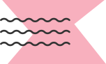

Mental Health Awareness Month
We’ve made it our mission to champion better wellbeing, for all. Equally important: taking the stigma out of seeking mental health support.
The Core Issue
Mental health is something we all experience, just like physical health. The problem? It's stigmatized in our culture—and stigma prevents support.
615 million
people live with a mental health condition globally.
60%
of people don't get the support they need.
11 years
is the average time people wait before seeking support.
What We're Doing About It
Normalizing the Conversation
We cover topics that span everyday issues along with global movements like Mental Health Awareness Month.

Walking the Talk
We're committed to transforming our culture to radically center around mental wellness.
How we're doing this:
- Every last Friday of the month is a Mental Health Day
- Ongoing training for managers and leaders
- Respect flexible work schedules
Grants and Partnerships
Our Social Mission launched in 2021 with The JED Foundation.
We helped fund their Let's Talk Program, which provides allyship training to high school staff.
What's Next
Olly has committed to making $1.5M in grants over the next three years.
We’re helping to make identity-affirming care accessible to those who need it most.
We’re advancing organizations helping people find care based on their individual needs.
We’re transforming mental health, leading by example and being the change we want to see.